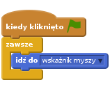
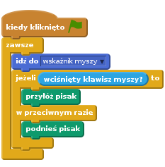
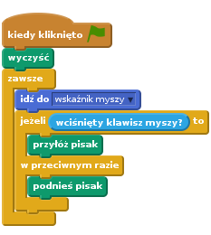
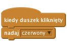
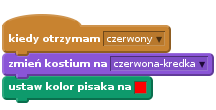
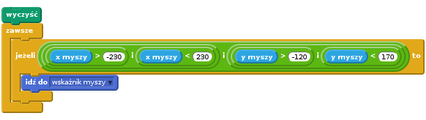

Wstęp
Podczas tego projektu stworzymy podstawowe narzędzia do rysowania. Będzie można rysować po ekranie kursorem myszy, zmieniać kolor linii, czyścić ekran czy robić pieczątki!

Krok 1: Rysowanie kursorem myszy
Zaczniemy od stworzenia kredki, która rysuje po scenie.
Zadania do wykonania
- Rozpocznij nowy projekt w Scratchu. Skasuj kota, klikając na nim prawym przyciskiem myszy i wybierając usuń.
- Kliknij na Scenę i przejdź do karty Tła. Dodaj tło z pliku Zasoby\tablica.
- Stwórz nowego duszka o nazwie zielona-kredka, wybierając plik Zasoby\zielona-kredka.
- Przejdź na kartę z kostiumami i kliknij na edycję kostiumu. W edytorze obrazów zmień centrum kostiumu na rysik kredki. Aby to zrobić, kliknij Ustaw środek kostiumu i przesuń punkt przecięcia linii na ekranie, aby był na końcu rysika.
Spraw, aby kredka podążała za kursorem myszy. Skorzystaj z bloków
zawszeorazidź do.
Teraz chcemy używać tego duszka jak prawdziwej kredki. Jeżeli zajrzysz do panelu Pisak, znajdziesz tam bloki związane z rysowaniem. Na razie interesują nas bloki przyłóż pisak i podnieś pisak.
Chcemy kontrolować kredkę przyciskiem myszy: jeżeli przycisk jest wciśnięty, kredka dotyka tablicy, a kiedy nie jest wciśnięty, kredka nie dotyka tablicy. Możemy to kontrolować korzystając z bloku
jeżeli... w przeciwnym razieiwciśnięty klawisz myszy?.
Przetestuj swój projekt
Kliknij zieloną flagę.
Czy kredka podąża za kursorem myszy? Co się dzieje, kiedy wciśniesz przycisk myszy i ją przesuniesz? Nie przejmuj się na razie kolorem linii.
Zadania do wykonania
Prędzej czy później ekran zapełni się rysunkami. Użyj bloku wyczyść do czyszczenia ekranu.

Przetestuj swój projekt
Kliknij zieloną flagę.
Czy rysunek znika po wciśnięciu flagi?
Zapisz swój projekt.
Krok 2: Czyszczenie ekranu
Zamiast uruchamiać cały projekt ponownie, aby wyczyścić ekran, dodajmy przycisk czyszczący. Możemy do tego także wykorzystać blok wyczyść.
Zadania do wykonania
- Stwórz nowego duszka korzystając z kostiumu z pliku Zasoby/przycisk-wyczysc.
- Zmień nazwę duszka na wyczyść.
- Przesuń duszka do dolnego lewego rogu sceny.
Dodaj poniższy skrypt:
Przetestuj swój projekt
Kliknij zieloną flagę.
Czy przycisk czyści ekran z rysunków?
Zapisz swój projekt.
Krok 3: Zmienianie kolorów
Do tej pory mogliśmy rysować tylko niebieskie linie. Pora zacząć zmieniać kolory! Dodamy kilka duszków na dole ekranu, które wyglądają jak kolorowe przyciski i klikając na nie, będziemy zmieniać kolor linii oraz kolor duszka-kredki.
Zadania do wykonania
- Dodaj nowego duszka i nazwij go czerwony. Użyj kostiumu z pliku Zasoby/czerwony-kolor.
- Ustaw go na dole ekranu obok przycisku wyczyść.
Po wciśnięciu, duszek czerwony powinien nadawać wiadomość czerwony.

Tak, to wszystko, co ma robić ten duszek. Całą trudną robotą zajmuje się kredka.
Przejdź do duszka-kredki i zaimportuj kostium z pliku Zasoby/czerwona-kredka. Ustaw środek kostiumu na końcu rysika tak jak dla oryginalnego kostiumu.
Dodaj nowy skrypt do kredki. Kiedy kredka otrzyma wiadomość czerwony, powinna zmienić swój kostium oraz zmienić kolor linii. Wskazówka: jeżeli klikniesz na kolorowy kwadrat bloku
ustaw kolor pisaka na, kursor zmieni się w pipetę – możesz nią kliknąć na czerwonym duszku, aby upewnić się, że używasz tego samego odcienia czerwonego.
Przetestuj swój projekt
Kliknij zieloną flagę.
Narysuj linię, a następnie kliknij na przycisk zmiany koloru na czerwony i narysuj coś jeszcze. Czy kredka zmieniła kostium? Czy rysuje teraz na czerwono? Czy rysuje końcem rysika?
Zapisz swój projekt.
Zadania do wykonania
- Powtórz powyższe kroki dodając duszki wyboru niebieskiego, żółtego i zielonego koloru.
Przetestuj swój projekt
Kliknij zieloną flagę.
Czy wszystkie przyciski wyboru koloru działają? Czy wszystkie zmieniają kostium na odpowiedni kolor? Czy po zmianie wszystkie linie są w odpowiednim kolorze? Czy wszystkie kredki rysują czubkiem rysika?
Zapisz swój projekt.
Krok 4: Rysowanie tylko wewnątrz danego obszaru
Teraz możemy rysować po całej scenie, nie tylko po tablicy. Trzeba to naprawić. Chcemy, aby można było rysować tylko po tablicy, trzeba więc będzie pilnować, aby kredka nie wyszła poza dozwolony obszar (czyli tablicę).
Pamiętaj, że Scratch określa punkty korzystając ze współrzędnych na osiach x i y. Tablica, po której chcemy rysować, znajduje się pomiędzy punktem -230 a 230 na osi x i pomiędzy -120 a 170 na osi y. Możemy użyć te wartości w bloku jeżeli, aby sprawdzać, czy kursor myszy znajduje się w tym obszarze, zanim przesuniemy ołówek w jego kierunku.
Aby to zrobić, owiń istniejące bloki idź do... jeżeli w kolejny blok jeżeli, który będzie sprawdzał położenie kursora myszy. Współrzędne kursora na osi x powinny być większe -230 i mniejsze niż 230, a współrzędne na osi y powinny być większe niż -120 i mniejsze od 170.
Uwaga. Aby to zrobić, potrzebujesz użyć kilku bloków z operatorem i: jeden dla obu warunków dla współrzędnych na osi x, jeden dla obu warunków dla współrzędnych na osi y oraz jeden do połączenia wszystkich warunków ze sobą.

Skoro nie możemy rysować poza wyznaczonym obszarem, byłoby dobrze chować kredkę, kiedy wyjdziemy poza tablicę. Aby to zrobić, zamień blok jeżeli na blok jeżeli... w przeciwnym razie. Zostaw warunek, który masz w jeżeli i pokaż kredkę, kiedy to prawda, w przeciwnym wypadku schowaj ją.
![kiedy kliknięto zieloną FLAGĘ
podnieś pisak
wyczyść
zawsze
jeżeli <<<(x myszy) > (-230)> i <(x myszy) < (230)>> i <<(y myszy) > (-120)> i <(y myszy) < (170)>>> to
idź do [wskaźnik myszy v]
pokaż
jeżeli (wciśnięty klawisz myszy?) to
przyłóż pisak
w przeciwnym razie
podnieś pisak
koniec
w przeciwnym razie
ukryj
koniec
koniec](3dc418ddb7d684a252910778f7fae46d4ee94ffa.png)
Przetestuj swój projekt
Kliknij zieloną flagę.
Czy możesz ciągle rysować po tablicy? Możesz rysować poza tym obszarem? Co się dzieje, kiedy wyjdziesz poza obszar, po którym można rysować, a potem do niego wrócisz?
Zapisz swój projekt.
Krok 5: Gumka
Super, że możemy już rysować, ale przydałoby się dodać gumkę do poprawiania drobnych błędów. Możemy to zrobić dodając nową kredkę, która rysuje na szaro (czyli w tym samym kolorze, co tło).
Dodaj nowego duszka i wybierz dla niego kostium z pliku Zasoby/gumka. Zmniejsz go, aby zmieścił się na dole ekranu i pasował do pozostałych przycisków. Nowy przycisk powinien działać tak samo, jak poprzednie i nadawać informacje, że jest gumką.
Duszek-kredka powinien reagować na wiadomość gumki i zmieniać kolor na szary (pamiętaj, że możesz użyć pipetę, aby wybrać odpowiedni kolor z tła). Duszek potrzebuje też nowy kostium – użyj tej samej gumki, co do przycisku wcześniej. Pamiętaj, aby ustawić środek duszka na jego końcu.
Przetestuj swój projekt
Kliknij zieloną flagę.
Czy gumka działa? Czy działa przy samych brzegach ekranu? Możesz przełączać się między gumką a kredkami?
Zapisz swój projekt.
Krok 6: Pieczątka
Następną rzeczą, którą możemy dodać, jest pieczątka, przy pomocy której będziemy dodawać małe obrazki na tablicę.
Zadania do wykonania
- Dodaj nowego duszka i wybierz mu taki kostium, jaki tylko chcesz. Zmniejsz go i ustaw na liście obok przycisków wyboru koloru. Po kliknięciu, duszek powinien nadawać wiadomość pieczątka.
- Dodaj wybranego duszka jako nowy kostium dla kredki.
- Zaznacz duszka-kredkę i dodaj do niej
zmiennąrysowanie. Zmienna powinna być dostępna tylko dla tego duszka. Będziemy jej używać do sprawdzania, czy rysujemy, czy też stawiamy pieczątki. - Dodaj skrypt, który odbiera wiadomość nadaną przez pieczątkę. Skrypt powinien zmieniać kostium kredki oraz ustawiać zmienną
rysowaniena fałsz. - Zmień pozostałe skrypty kredki, które reagują na wiadomości nadawane przez przyciski z tablicy, aby ustawiały zmienną
rysowaniena prawda. - Na koniec, sprawdzajmy tą zmienną kiedy wciśnięty jest przycisk myszy, aby się upewnić, czy powinniśmy rysować, czy stawiać pieczątki. Jeżeli
rysowanie= prawda, powinniśmy używać blokuprzyłóż pisak. Jeżeli nie, powinniśmy użyć blokustempluj.
Przetestuj swój projekt
Kliknij zieloną flagę.
Czy pieczątka działa jak trzeba?
Co się dzieje, jeżeli przełączysz z powrotem na zwykłą kredkę?
Zapisz swój projekt.
Brawo! Udało Ci się zakończyć podstawowe elementy tego projektu. Teraz spróbuj zmierzyć się z poniższymi wyzwaniami!
Wyzwanie 1: Tęczowa kredka
Dodajmy specjalną kredkę, który rysuje we wszystkich kolorach tęczy. Zwykłe kredki tego nie potrafią, więc masz teraz okazję pokazać, że rysowanie na komputerze pozwala robić rzeczy, które nie są normalnie możliwe. Aby to zrobić, musisz często zmieniać kolor kredki.
Na początek dodaj jednak przycisk wyboru tęczowego koloru i tęczowy kostium dla duszka-kredki:
- Dodaj nowego duszka z wyborem koloru na dole tablicy, tuż obok innych przycisków. Skorzystaj z kostiumu z pliku ‘Zasoby/teczowy-kolor’ i każ mu nadawać wiadomość tęcza po kliknięciu.
- Dodaj kostium z pliku ‘Zasoby/teczowa-kredka’ do duszka-kredki.
Potrzebujesz zbudować skrypt, który będzie zmieniał kolor kredki wiele razy w ciągu sekundy, aby oddać efekt tęczy. Zmienianie koloru o 5 co 0,05 sekundy działa całkiem dobrze, ale przetestuj inne wartości. Skorzystaj z bloku zmień kolor pisaka o 5.
Musisz też pilnować, aby ta pętla zmieniała kolory tylko wtedy, kiedy jest wybrana tęczowa kredka – w przeciwnym razie wszystkie kredki będą rysować na tęczowo! Możesz to zrobić w sposób podobny do tego, w który kontrolujesz, czy rysujesz, czy stawiasz pieczątki. Musisz stworzyć zmienną pokażTęczę, która ma wartość prawda jeżeli chcesz rysować tęczę i wartość fałsz, jeżeli nie chcesz. Za każdym razem, gdy kredka reaguje na wiadomość odebraną od przycisku na dole tablicy, powinna ustawiać odpowiednią wartość dla zmiennej pokażTęczę.
Użyj przykładu z pieczątkami, aby nauczyć się kontrolować tęczę. Każdy skrypt, który reaguje na wiadomości nadawane przez przyciski wyboru na tablicy, będzie musiał ustawiać wartość dwóch zmiennych: rysowanie i pokażTęczę.
Przetestuj swój projekt
Kliknij zieloną flagę.
Czy rysowanie na tęczowo działa jak należy?
Co się dzieje, kiedy przełączasz się między tęczową kredką a pozostałymi narzędziami?
Zapisz swój projekt.
Wyzwanie 2: Skróty klawiszowe
Zamiast klikać na przyciski na dole tablicy, możesz używać klawiatury, aby przełączać się pomiędzy różnymi narzędziami. Możesz skorzystać z bloku jeżeliklawisz [] naciśnięty, aby reagować na komendy klawiatury. Dla każdego skrótu, którego chcesz użyć, potrzebujesz ustawić osobny blok jeżeliklawisz [] naciśnięty, który prześle tą samą wiadomość, którą nadałby kliknięty odpowiedni przycisk. Dodaj te skrypty do sceny.
My skorzystaliśmy z tych skrótów:
- Wyczyść wszystko - w
- Gumka - g
- Czerwony ołówek - c
- Niebieski ołówek - n
- Żółty ołówek - x
- Zielony ołówek - z
- Tęczowy ołówek - t
- Pieczątka - p
Przetestuj swój projekt
Kliknij zieloną flagę.
Czy wszystkie skróty klawiszowe działają? Czy możesz wybierać wszystkie narzędzia przy pomocy klawiatury? Czy klikanie na przyciski na tablicy dalej działa?
Zapisz swój projekt.
Wyzwanie 3: Różne rozmiary linii
Następną opcją, która jest dostępna w programach graficznych, jest możliwość zmieniania rozmiaru linii. Dodajmy to do naszego projektu.
Mamy jeden problem, z którym trzeba będzie się zmierzyć: zmiana rozmiaru czasami musi zmienić rozmiar kredki, a czasami rozmiar kostiumu duszka. Wszystko zależy od tego, czy rysujemy, czy też stawiamy pieczątki.
Stwórz dwa nowe duszki-przyciski na tablicy i nazwij je powiększ i pomniejsz. Dodaj do nich odpowiednie kostiumy z katalogu Zasoby. Oba duszki powinny też nadawać odpowiednie wiadomości (powiększ i pomniejsz) po kliknięciu.
Duszek-kredka może reagować na te wiadomości na dwa sposoby: albo zmieniając rozmiar pisaka o 1, albo rozmiar kostiumu o 10, w zależności od wartości zmiennej rysowanie. Skorzystaj z bloku jeżeli ... w przeciwnym razie, aby to kontrolować – podobnie jak w przypadku wybierania między przyłożeniem pisaka a stawianiem pieczątek.
Nie zapomnij dodać skrótów klawiszowych dla nowego narzędzia (my dodaliśmy strzałkę w górę i dół).
Zapisz swój projekt.
Pewnie udało Ci się zauważyć, że zmiana rozmiaru pieczątki zmienia też rozmiar duszka na ekranie, łączenie z kredkami. Aby tego uniknąć, musisz ustawiać rozmiar kostiumu na 100% za każdym razem, kiedy przełączasz się na kredkę. Pomoże to zachować odpowiedni rozmiar kredek.
Możesz jeszcze bardziej ulepszyć swoje narzędzia, każąc pieczątce zapamiętać swój rozmiar, tak aby po przełączeniu się na kredkę czy gumkę można było wrócić do starego rozmiaru pieczątki. Najłatwiejszym rozwiązaniem jest dodanie zmiennej rozmiarPieczątki, która zapisuje obecny rozmiar pieczątki po każdej jego zmianie. Po ponownym wybraniu pieczątki, powinna ona odczytać tę zmienną i wybrać odpowiedni rozmiar.
Przetestuj swój projekt
Kliknij zieloną flagę.
Czy przyciski zmiany rozmiaru działają dla kredek?
Co się dzieje, kiedy przełączasz się na pieczątkę, zmieniasz jej rozmiar i przełączasz się na kredkę?
Zapisz swój projekt.
Brawo! To by było na tyle, teraz możesz się cieszyć swoją grą!
Nie zapomnij, że możesz podzielić się swoją grą ze swoimi przyjaciółmi i rodziną. Żeby to zrobić, kliknij menu Udostępnij.